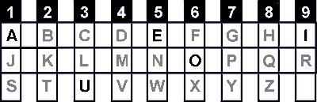
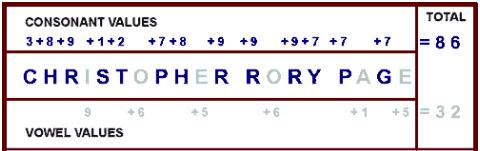

Numerology is a science that is used by many people to find
out a mans personality, sole purpose of life, desires to experience etc. Some
calculations of numerology are very complex, while others are quite simple. You
can sit alone at home and do these easy calculations without taking any ones
help. However in this problem you wont be asked to find the value of your
name.

To find the value of a name modern numerologists have assigned values to all the
letters of English Alphabet. The table on the left shows the numerical values
of all letters of English alphabets. Five letters A, E, I, O, U are vowels. Rests
of the letters are consonant.
In this table all letters in column 1 have value 1, all
letters in column 2 have value 2 and so on. So T has value 2, F has value 6, R
has value 9, O has value 6 etc. When calculating the value of a particular name
the consonants and vowels are calculated separately. The following picture
explains this method using the name ``CHRISTOPHER RORY PAGE".

So you can see that to find the consonant value, the values of individual
consonants are added and to find the vowel value the values of individual
vowels are added.
A mad Numerologist suggests people many strange lucky names.
He follows the rules stated below while giving lucky names.
- The name has a predefined length N.
- The vowel value and consonant value of the name must be
kept minimum.
- To make the pronunciation of the name possible vowels
and consonants are placed in alternate positions. Actually vowels are put in
odd positions and consonants are put in even positions. The leftmost letter of
a name has position 1; the position right to it is position 2 and so on.
- No consonants can be used in a name more than five
times and no vowels can be used in a name more than twenty-one times
- Following the rules and limitations above the name must
be kept lexicographically smallest. Please note that the numerologists first
priority is to keep the vowel and consonant value minimum and then to make the
name lexicographically smallest.
First line of the input file contains an integer N (
0 < N 250) that indicates how
many sets of inputs are there. Each of the next N lines contains a single set
of input. The description of each set is given below:
Each line contains an integer n (
0 < n < 211) that indicates the predefined length of the name.
For each set of input produce one line of output. This line
contains the serial of output followed by the name that the numerologist would
suggest following the rules above. All letters in the output should be
uppercase English letters.
250) that indicates how
many sets of inputs are there. Each of the next N lines contains a single set
of input. The description of each set is given below:
Each line contains an integer n (
0 < n < 211) that indicates the predefined length of the name.
For each set of input produce one line of output. This line
contains the serial of output followed by the name that the numerologist would
suggest following the rules above. All letters in the output should be
uppercase English letters.
3
1
5
5
Case 1: A
Case 2: AJAJA
Case 3: AJAJA
Miguel Revilla
2004-12-02